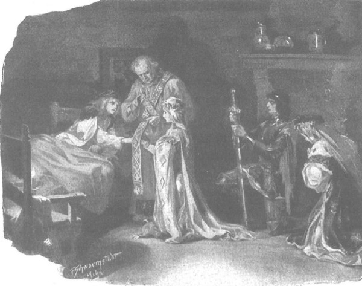
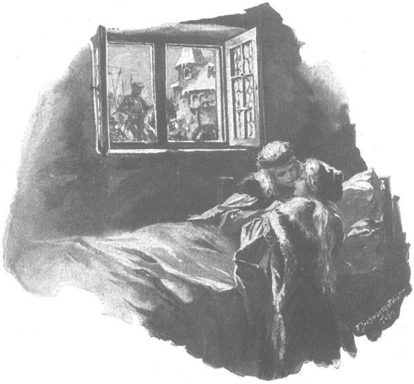

Ba hôm sau, người đàn bà đã được báo trước mang theo thứ thuốc xoa vùng Hercynski đến, cùng đi có cả viên quan chỉ huy lính cung thủ thành Szczytno. Y đem theo bức thư do các đồng đạo ký tên, được Danveld đóng triện, trong đó bọn hiệp sĩ Thánh chiến viện cả trời đất ra làm chứng cho những điều xúc phạm mà chúng đã gặp phải trên vùng đất Mazowsze, và đòi phải trừng trị kẻ đã giết hại “người đồng hành thân mến và vị khách đáng kính”, nếu không muốn hứng chịu sự trừng phạt của Chúa. Gã Danveld còn đọc cho người khác viết hộ thêm vào bức thư lời kêu kiện của gã, bằng những lời nhũn nhặn nhưng đầy hàm ý de dọa, đòi phải được bồi thường vì đã bị hành hung thành trọng thương và đòi phải tử hình chàng hộ vệ người Séc. Ngay trước mặt viên quan, quận công xé vụn bức thư, vứt xuống chân mà bảo:
- Đại thống lĩnh Giáo đoàn phái bọn chúng sang đây để lấy lòng ta, thế mà chúng đã làm ta thêm nộ khí. Ngươi về bảo cho chúng rằng chính bọn chúng đã giết chết vị khách của chúng, còn định giết cả người hộ vệ nữa. Ta sẽ viết thư báo cho ngài đại thống lĩnh chuyện này, và ta cũng nhất định sẽ viết thêm là ngài nên chọn những vị sứ giả khác, nếu muốn ta không đứng về phía nào khi có chiến tranh với đức vua Kraków.
- Tâu quận công, - viên quan nói, - lẽ nào tôi phải nhắc nguyên những lời ấy cho các đồng đạo hùng mạnh và thánh thiện hay sao?
- Nếu thấy chưa đủ, người hãy bảo thêm cho bọn chúng hay rằng ta không coi chúng là hiệp sĩ chân chính, mà coi chúng là đồ chó đẻ!
Buổi triều kiến kết thúc ở đó. Viên tướng ra đi, và ngay hôm ấy, quận công cũng lên đường trở về Ciechanow. Chỉ còn lại mụ “xơ” với thứ thuốc xoa mà linh mục Wyszoniek nghi ngại không cho dùng, nhất là khi đêm trước người bị thương đã ngủ ngon giấc, hôm sau chàng tỉnh dậy, tuy vẫn còn rất mệt nhưng đã hết sốt. Ngay sau hôm quận công lên đường, mụ “xơ” phái một trong những gia nhân cùng đi trở về, bảo là để lấy thứ thuốc mới - thứ “trứng gà tinh” [179] mà mụ bảo là có khả năng hồi phục sức khỏe cho ngay cả những kẻ đang hấp hối - còn mụ thì cứ thơ thẩn lang thang khắp hành cung, vẻ nhẫn nhục nhún nhường, với một cánh tay bị liệt, trong bộ quần áo thường dân nhưng nom vẫn ra tuồng trang phục tu hành, với chuỗi tràng hạt và quả bầu khô của kẻ hành hương đeo bên thắt lưng. Nói rất sõi tiếng Ba Lan, mụ dò hỏi cặn kẽ bọn gia nhân về Zbyszko và Danusia, còn nhân dịp thuận tiện gửi tặng cô gái một cành hồng phục sinh [180] , và hôm sau, lúc Zbyszko đang ngủ, cô gái đang ngồi trong phòng ăn, mụ bèn sán đến gần nàng và bảo:
- Xin Chúa hãy ban phước cho tiểu thư. Đêm hôm qua tôi mơ thấy có hai chàng hiệp sĩ băng qua màn tuyết rơi dày đến gặp tiểu thư, một chàng đến trước, quấn tiểu thư vào chiếc áo choàng trắng tuyết, còn chàng thứ hai thốt lên: “Ta chỉ thấy tuyết, chẳng thấy nàng đâu”, rồi chàng trở lui.
Đang buồn ngủ, Danusia liền mở tròn đôi mắt xanh tò mò và hỏi lại:
- Thế nghĩa là thế nào?
- Thế nghĩa là người yêu tiểu thư nhất sẽ cưới được tiểu thư.
- Đó chính là Zbyszko! - Cô gái thốt lên.
- Tôi không rõ, bởi tôi không nhìn thấy mặt chàng, chỉ trông thấy tà áo choàng màu trắng là đã tỉnh giấc, bởi hằng đêm Đức Chúa Giêsu gửi xuống cho tôi nỗi nhức nhối trong đôi chân, còn cánh tay này thì Người đã lấy đi hẳn.
- Thế thứ thuốc xoa này cũng chẳng giúp gì được cho bà sao?
- Thưa tiểu thư, ngay cả thứ thuốc xoa thần diệu này cũng chẳng thể ích gì cho tôi, bởi tôi đã phạm một trọng tội, và nếu tiểu thư muốn biết, tôi xin kể hầu tiểu thư.
Danusia gật đầu ra hiệu muốn nghe, mụ xơ bèn nói tiếp:
- Trong Giáo đoàn có những tôi tớ, những người phụ nữ có thể đã có chồng, tuy không tuyên thệ, nhưng vẫn có nghĩa vụ phải tuân thủ những mệnh lệnh của các anh em đồng đạo. Người phụ nữ nào được hưởng niềm ân huệ và vinh dự ấy, người ấy sẽ được đón nhận nụ hôn thánh thiện của một hiệp sĩ đồng đạo, từ đó trở đi mọi lời nói và việc làm đều phải vì Giáo đoàn mà phụng sự. Ôi, thưa tiểu thư!
Lẽ ra tôi cũng đã được đón nhận niềm ân huệ lớn lao đó, nhưng trong nỗi rắn lòng tội lỗi, thay vì hàm ơn đón nhận, tôi lại phạm phải một tội trọng và vì thế đã phải gánh chịu hình phạt thế này đây.
- Nhưng bà đã làm gì chứ?
- Đồng đạo Danveld đến với tôi, trao cho tôi nụ hôn của Giáo đoàn, ấy thế mà tôi lại ngỡ rằng ngài túng tình làm điều xằng bậy, bèn giơ cánh tay vô đạo này lên với ngài…
Nói đến đây mụ dập bình bịch vào ngực, lặp đi lặp lại:
- Chúa ơi, Chúa ơi, hãy thương tình kẻ có tội là con!
- Thế rồi sao? - Danusia hỏi.
- Thế là ngay lúc đó tay tôi bị liệt luôn, tôi trở thành kẻ tật nguyền. Hồi ấy, tôi còn trẻ người non dạ, nào đâu tôi có biết gì! Ấy thế nhưng hình phạt vẫn giáng xuống đầu tôi! Vậy nên nếu đàn bà con gái chúng ta có tưởng một đồng đạo nào đó của Giáo đoàn định làm điều xằng bậy, thì xin cứ để Chúa phán xét hành động ấy, chứ tự mình đừng kháng cự lại, bởi kẻ nào cưỡng chống Giáo đoàn hoặc một anh em đồng đạo, kẻ đó sẽ phải gánh chịu cơn thịnh nộ của Chúa Trời….
Nghe những lời ấy, Danusia chợt cảm thấy phiền lòng và run sợ, còn mụ xơ thở dài và tiếp tục tuôn ra những lời ta thán.
- Tôi chưa đến tuổi già, - mụ bảo, - mới chưa tròn ba mươi thôi, nhưng cùng với cánh tay này, Chúa đã tước đi của tôi cả tuổi trẻ và sắc đẹp.
- Giá như không có cánh tay liệt, - Danusia nói, - thì bà cũng chẳng có điều gì phải ta thán…
Im lặng kéo dài. Đột nhiên, dường như chợt nghĩ ra điều gì, mụ xơ bảo:
- Tôi mơ thấy một hiệp sĩ dùng áo choàng trắng quấn lấy tiểu thư trên mặt tuyết. Có thể đó là một hiệp sĩ Thánh chiến cũng nên! Các hiệp sĩ Thánh chiến chẳng khoác áo choàng trắng là gì!
- Tôi không thích cả lũ Thánh chiến lẫn những tấm áo choàng trắng của chúng! - Cô gái thốt lên.
Câu chuyện đến đó bị gián đoạn bởi linh mục Wyszoniek. Ông bước vào phòng ăn, gật đầu ra hiệu cho Danusia và bảo nàng:
- Con hãy ngợi ca Đức Chúa và hãy đến ngay với Zbyszko! Chàng vừa tỉnh giấc và đang đòi ăn. Chàng đỡ nhiều lắm rồi.
Quả đúng như thế. Zbyszko thấy khỏe hơn nhiều và linh mục Wyszoniek gần như hoàn toàn tin chắc rằng chàng sẽ khỏe lại, nếu không có một sự biến bất ngờ làm xáo trộn mọi tính toán và hy vọng. Ông Jurand cử những người gia nhân mang thư tới báo cho quận chúa hay toàn những tin dữ đến kinh hoàng. Một phần tòa thành ở trang Spychow bị hỏa tai, trong khi cứu lửa ông đã bị một chiếc xà đang cháy rơi trúng người. Linh mục Kalew, người thay mặt ông viết bức thư, tuy có ghi rằng hiệp sĩ Jurand có thể sẽ sống qua được, nhưng những tia lửa và than cháy đã thiêu đốt con mắt lành duy nhất của ông, khiến nó gần như bị mờ hẳn và chắc chẳng bao lâu nữa ông sẽ bị mù hoàn toàn.
Vì vậy, ông Jurand cho gọi con gái phải nhanh chóng trở về Spychow, vì muốn được nhìn mặt con lần cuối trước khi bị bóng đêm che mờ đôi mắt. Ông cũng bảo rằng từ nay trở đi cô gái sẽ sống bên ông mãi mãi, bởi ngay cả đám người mù lòa lang thang sống nhờ miếng bánh bố thí của nhân gian còn có được những đứa trẻ cầm tay dắt đi và chỉ đường cho, thì sao ông lại bị tước đi niềm an ủi cuối cùng, đành cam chịu chết giữa những người không thân thuộc? Trong thư cũng có những lời cảm ơn thành kính dành cho quận chúa, người đã nuôi dưỡng cô gái như mẹ đẻ. Và sau rốt ông Jurand còn hứa với bà rằng dẫu có mù lòa, thể nào ông cũng sẽ lần đến tận Warszawa để được quỳ phục xuống dưới chân quận chúa, xin bà gia ơn chăm lo cho những tháng năm sau này của Danusia.
Khi được cha Wyszoniek đọc cho nghe bức thư kia, suốt một hồi lâu quận chúa lặng người không nói được lời nào. Bà vẫn hy vọng rằng, vốn mỗi năm ông Jurand thường ghé thăm con gái năm, sáu lần, gần lẽ giáng sinh thể nào ông cũng lại tới thăm con, và khi ấy bà dùng uy tín cá nhân cũng như uy tín của quận công Janusz thuyết phục ông Jurand chấp nhận Zbyszko, đồng ý cho tổ chức lễ cưới vào một ngày gần đấy. Bức thư kia không những đã xóa tan đi dự định ấy, mà còn cướp mất của bà cô gái Danusia, người mà bà thương yêu ngang với con đẻ. Bà thầm nghĩ có thể ông Jurand sẽ gả Danusia cho một người láng giềng gần gũi nào đó để được sống gần con trong những ngày tàn của cuộc đời. Về chuyện Zbyszko đến Spychow thì chẳng nên nghĩ đến làm gì lúc này, bởi những xương sườn của chàng mới vừa tạm thời liền lại, vả chăng ai có thể biết chắc khi đến Spychow, chàng sẽ được đón tiếp với thái độ ra sao? Quận chúa biết rõ rằng hồi trước ông Jurand đã từ chối không chịu gả Danusia cho chàng, và chính ông đã có lần nói riêng với bà rằng vì những lý do bí mật, ông sẽ không bao giờ cho phép đôi trẻ gắn bó với nhau.
Vô cùng phiền muộn, bà cho gọi người cao tuổi nhất trong số các gia nhân được ông Jurand phái đến, để hỏi thăm về tai họa ở Spychow và dò hỏi những ý định của ông trang chủ Jurand.
Bà ngạc nhiên thấy người xuất hiện không phải ông lão Tolima - thường mang khiên cho ông Jurand và cùng ông lui tới đây - mà là một người hoàn toàn xa lạ, trả lời bà rằng trong trận đánh với quân Đức gần đây, ông Tolima đã bị thương nặng, hiện đang vật vã với cái chết tại trang Spychow. Còn trang chủ Jurand bị trọng thương nên xin quận chúa cho con gái ông được trở về càng nhanh càng tốt, bởi mỗi ngày mắt ông một kém hơn, vài ngày nữa chưa chừng sẽ lòa hẳn. Người gia nhân ấy thậm chí còn xin bà cho mang ngay cô gái đi, chỉ chờ lũ ngựa được nghỉ ngơi chốc lát. Nhưng bởi lúc ấy trời đã tối, quận chúa cương quyết không cho, vả lại bà cũng không đành lòng để cho cuộc chia tay quá đỗi vội vàng xé nát trái tim của Zbyszko, của Danusia và của chính bà.
Nhưng đã hay biết mọi chuyện, chàng Zbyszko nằm im trong buồng như vừa bị rìu bổ vào đầu. Và khi quận chúa bước vào, vừa vặn vẹo đôi tay vừa lên tiếng ngay từ ngưỡng cửa: “Biết làm thế nào được hả con, dẫu sao ông ấy cũng là cha đẻ!”, thì chàng cũng nhắc lại lời bà như một tiếng vang: “Biết làm thế nào được!”, rồi chàng nhắm nghiền mắt lại, như đang chờ thần chết đến đón đi ngay.
Nhưng thần chết không đến, mặc dù trong lòng chàng nỗi đau đớn càng lúc càng lớn lên, và ý nghĩ bay vụt qua đầu chàng càng lúc càng tăm tối hơn, giống như những đám mây đen bị gió lốc xua đuổi, hết đám này đến đám khác nối nhau che khuất ánh mặt trời, tắt lụi đi mọi niềm vui trên nhân thế. Bởi lẽ Zbyszko cũng hiểu như quận chúa, rằng một khi Danusia lên đường về Spychow là chàng sẽ vĩnh viễn đánh mất nàng, ở đây ai cũng thương yêu chàng, chứ nơi kia, biết đâu ông Jurand sẽ không thèm tiếp chàng, không muốn nghe chàng giãi bày, nhất là khi ông bị ràng buộc bởi một lời thề nguyền hay một nguyên do chưa tường nào đó, cũng quan trọng ngang một lời thề tôn giáo.
Vả, chàng làm sao có thể đi đến Spychow được khi còn đang nằm liệt giường đây, cố lắm mới có thể nhúc nhích nổi. Vài ngày trước đây, khi được quận công ban cho dải đai hiệp sĩ và đôi cựa gót vàng, chàng ngỡ niềm sướng vui có thể giúp chiến thắng thương tật, chàng đã hết lòng nguyện cầu cho mau khỏe lại để đấu với bọn hiệp sĩ Thánh chiến, nhưng lúc này chàng mất hết mọi hy vọng, cảm thấy khi vắng mặt Danusia bên giường, chàng chẳng còn niềm vui sống, mất đi sức lực để chiến đấu với cái chết.
Rồi ngày mai, ngày kia, sẽ tới đêm noel và ngày giáng sinh, xương cốt sẽ vẫn đau như dần hệt hôm nay, sẽ cũng vẫn những cơn mệt mỏi như thế này, nhưng sẽ không còn bên chàng vầng sáng hiền dịu từ Danusia tỏa lan khắp phòng, và sẽ không còn một đôi mắt tươi vui nhìn theo nàng nữa. Vui sướng thay và ngọt ngào thay, được hỏi nàng vài lần mỗi ngày cùng một câu hỏi: “Nàng có yêu tôi chăng?” để được thấy nàng lấy bàn tay che đôi mắt tươi cười đầy xấu hổ hay cúi cả người xuống trả lời: “Còn yêu ai được nữa?” Giờ thì chỉ còn lại thương tật với nỗi đau cùng nhung nhớ, còn hạnh phúc sẽ một đi không trở lại.
Lệ long lanh trong mắt Zbyszko, chầm chậm lăn xuống má. Chàng ngoảnh nhìn quận chúa, thưa:
- Tâu lệnh bà, con nghĩ rằng đời này con sẽ không còn được gặp Danusia lần nữa.
Dù lòng phiền muộn, nhưng quận chúa cũng phải nói:
- Nếu ngươi chết vì tiếc nuối thì cũng không lạ. Nhưng con ơi, Chúa Giêsu rất đỗi nhân từ.
Và lát sau, muốn động viên chàng, bà nói thêm:
- Nếu chẳng may mà ông Jurand qua đời trước, quyền bảo trợ sẽ sang tay quận công và ta, rồi chúng ta sẽ trao con bé cho con ngay lập tức.
- Ông ấy khó mà chết! - Zbyszko nói.
Nhưng một ý nghĩ mới mẻ chợt bừng lên trong óc, chàng liền nhỏm dậy, ngồi hẳn dậy trên giường, thốt bằng giọng hoàn toàn biến đổi:
- Muôn tâu lệnh bà…
Đúng lúc ấy Danusia vừa khóc vừa chạy ào vào, ngay từ ngưỡng cửa đã kêu lên ngắt lời chàng:
- Chàng đã biết rồi ư, Zbyszko! Ôi! Em thương cha mà cũng thương chàng! Chàng ơi!
Khi cô gái lại gần bên, Zbyszko bèn dùng cánh tay lành lặn ôm nàng và bảo:
- Cô gái ơi, làm sao tôi sống thiếu em đây? Tôi băng sông vượt núi đến đây, tôi thề nguyền và phụng sự em đâu phải để mất em mãi mãi. Hey! Tiếc thương chẳng ích gì, than khóc chẳng ích gì, ngay cả cái chết nữa cũng thế, bởi dẫu cỏ có phủ xanh mồ tôi, linh hồn tôi đâu thể quên em để được về trong lâu đài của Chúa Giêsu, hay cả bên Đức Chúa Cha… Tuy nói không có cách gì, nhưng phải tìm ra cách gì chứ, bởi thiếu em tôi sống làm sao? Tôi thấy đau trong xương, nỗi đau quá lắm, nhưng không thể quỳ xuống chân lệnh bà, vậy em hãy quỳ xuống đi và cầu xin lệnh bà che chở cho đôi ta.
Nghe lời chàng, Danusia vội lao tới ôm chân quận chúa, giấu khuôn mặt trắng nõn nà vào những nếp gấp của chiếc áo dài dày nặng của bà. Quận chúa ngước đôi mắt đầy thương cảm nhưng cũng đầy ngạc nhiên nhìn Zbyszko:
- Ta giúp gì được cho các con kia chứ? - Bà hỏi - Nếu ta không để cho con trẻ trở về với người cha đang đau yếu, ta sẽ mang tội với Chúa.
Vừa mới nhổm dậy trên giường, lúc này Zbyszko lại nằm ngả xuống gối, hồi lâu không thốt lên được nên lời, bởi chàng cảm thấy nghẹn thở. Nhưng trên ngực chàng, một cánh tay cứ chậm chạp lần tìm tới cánh tay kia và chắp lại nguyện cầu.
- Ngươi cứ nằm nghỉ đi, - quận chúa truyền, - rồi hãy nói ta nghe ý ngươi ra sao, còn con, Danusia, hãy bỏ đầu gối ta ra nào!
- Em hãy nới bớt tay ra chứ khoan đứng dậy, hãy cầu xin cùng với anh đi em! - Zbyszko lên tiếng.
Rồi chàng cố sức thốt lên bằng giọng yếu ớt và đứt đoạn:
- Tâu lệnh bà nhân hậu!… Ông Jurand đã ngăn cản con hồi ở Kraków, nếu… có mặt ở đây chắc ông cũng làm thế… Nhưng nếu cha Wyszoniek làm lễ cưới cho con và Danusia, thì cho dù sau đó nàng có thể về Spychow chăng nữa, cũng không một sức mạnh gian thế nào có thể cướp nàng của con được nữa…
Lời chàng quá đỗi bất ngờ đối với quận chúa, khiến bà bật nhổm khỏi chiếc ghế dài đang ngồi, rồi lại ngồi xuống, và như thể không thật hiểu rõ chàng muốn gì, bà thốt lên:
- Lạy Chúa tôi!… Linh mục Wyszoniek?…
- Muôn tâu quận chúa nhân từ!… Con lạy quận chúa nhân hậu!… - Zbyszko khẩn khoản.
- Muôn xin lệnh bà nhân hậu! - Danusia cũng lặp lại lời chàng, ôm ghì lấy đầu gối quận chúa.
- Làm sao có thể cưới không được phép của cha mẹ…
- Ý muốn của Chúa còn uy quyền hơn bậc sinh thành kia!
- Các ngươi phải biết sợ Chúa chứ!
- Ai là cha, nếu không phải linh mục?… Ai là mẹ, nếu không phải lệnh bà, muôn tâu quận chúa!
Danusia lại thốt lên:
- Con lạy mẫu thân nhân hậu!
- Đúng vậy, ta đã và đang như là mẹ của con. - Quận chúa thốt lên. - Và cũng chính ta đã cưới vợ cho ông Jurand. Quả vậy! Mà quả thực nếu đã có lễ cưới thì mọi sự sẽ xong. Có thể ông Jurand sẽ giận, nhưng ông ấy cũng phải nể quận công như bề trên của mình chứ. Vả lại, cũng chẳng cần phải nói ngay với ông ấy làm gì, trừ phi ông ấy muốn gả con bé cho ai khác hoặc hiến nó cho nhà thờ làm nữ tu thì hẵng hay… Nếu ông ấy có thề thốt gì đó thì đây cũng không phải lỗi của ông ấy. Không ai có thể cưỡng lại ý chí của Chúa… Với Chúa nhân từ hằng sống, biết đâu đây chẳng phải là ý của Người!
- Nhất định thế rồi! - Zbyszko kêu lên.
Nhưng còn đang trong cơn xúc động, quận chúa bảo:
- Khoan, để ta bình tâm suy xét đã! Giá có quận công ở đây, ta đến gặp người hỏi ngay có nên cho Danusia cưới không?… Nhưng không có chúa công, ta hơi sợ… sợ đến nghẹn cả thở, mà thì giờ chẳng còn, ngày mai con bé đã phải lên đường rồi!… Lạy Chúa Giêsu lòng lành! Nếu như nó cưới rồi mới đi thì yên tâm. Nhưng sao lòng ta không yên, sao ta vẫn e sợ điều gì. Con không sợ ư, Danusia? Nói ta nghe!
- Thiếu nàng con chết mất thôi! - Zbyszko xen ngang.
Danusia nhổm khỏi đầu gối bà, và vốn được quận chúa cho phép thân mật âu yếm, cô gái bèn ôm ghì lấy cổ bà thật chặt.
Quận chúa truyền:
- Không có mặt cha Wyszoniek, ta sẽ không nói gì với các ngươi cả! Chạy đi tìm cha đến đây mau!
Danusia chạy ngay đi tìm cha Wyszoniek, còn Zbyszko ngoảnh khuôn mặt tái nhợt của chàng nhìn quận chúa và thốt lên:
- Chúa Giêsu ban cho điều gì thì ắt được điều ấy, nhưng muôn tâu lệnh bà, xin Chúa hãy trả công cho lệnh bà vì đã mang lại cho con niềm hạnh phúc lớn lao nhường này.
- Khoan hẵng cầu phúc cho ta, - quận chúa nói, - bởi chưa biết chuyện sẽ diễn ra thế nào. Mà ngươi cũng phải thề danh dự với ta là nếu được cưới rồi, ngươi cũng sẽ không ngăn trở con bé trở về với cha đẻ của nó ngay, để những lời nguyền rủa của ông ấy không giáng xuống đầu ta và ngươi.
- Xin thề trên danh dự của tôi! - Zbyszko thề.
- Vậy thì hãy nhớ lấy! Còn ông Jurand thì chưa nên cho biết làm gì vội. Tốt nhất không nên để tin này thiêu đốt ông ấy. Khi về đến Ciechanow, chúng ta sẽ cử người đến đón ông ấy và Danusia, rồi chính ta sẽ nói với ông ấy hoặc ta sẽ cầu xin quận công nói giúp. Ông ấy không còn cách nào khác thì sẽ đồng ý thôi. Ông ấy vốn không ghét ngươi chứ?
- Thưa không. - Zbyszko đáp. - Hiệp sĩ Jurand không ghét gì con, có thể ông ấy mừng thầm là Danusia đã thuộc về con. Nếu ông ấy có thề nguyền gì, chuyện xảy ra không phải lỗi của ông ấy.
Linh mục Wyszoniek và Danusia cùng bước vào làm gián đoạn câu chuyện. Quận chúa mời cha linh mục đến, hăng hái thuật lại cho cha nghe về ý định của Zbyszko, nhưng chỉ vừa nghe thủng câu chuyện, cha đã vội làm dấu thánh và thốt lên:
- Nhân danh Cha, Con và Thánh Thần!… Tôi làm thế sao được! Bây giờ đang là Mùa Vọng kia mà!
- Lạy Chúa! Đúng thật! - Quận chúa kêu lên.
Im lặng bao trùm, những khuôn mặt xịu xuống cũng đủ cho thấy mức độ nặng nề của những lời cha Wyszoniek tác động đến tất thảy những người có mặt.
Hồi lâu sau, linh mục nói:
- Nếu được phép ngoại lệ của đức giám mục, tôi sẽ không cưỡng, bởi tôi cũng thương tình cho hai trẻ. Tôi cũng không nhất thiết phải hỏi xem ông Jurand có cho phép hay chưa, bởi một khi quận chúa nhân từ đây đã cho phép và cam đoan cho sự ưng thuận của chính chúa công ta, thì cần gì hơn nữa - họ chẳng đã là cha là mẹ của cả công quốc Mazowsze ta đây rồi sao! Nhưng nếu không có phép ngoại lệ của đức cha giám mục thì tôi không thể! Ha! Giá cha Jakub giám mục xứ Kurdwanów [181] có mặt ở đây, chắc người cũng chẳng nỡ chối từ ban phép ngoại lệ, dẫu người có sắt đá, chẳng như cha tiền nhiệm, giám mục Mamphiolus [182] đâu, cha tiền nhiệm thì gặp sự gì cũng truyền: Bene! Bene!
- Cha giám mục Jakub xứ Kurdwanów rất mến mộ chúa công và ta. - Quận chúa chen lời.
- Cũng chính vì thế mà tôi mới nói đức giám mục sẽ không chối từ ban phép ngoại lệ, nhất là khi có lý do để làm việc đó… Cô gái sắp phải ra đi, còn chàng trai thì đang đau yếu và có thể qua đời… Hừm! In articulo mortis [183] … Nhưng nếu không có phép thì chẳng làm sao được…
- Thì để ta xin cha giám mục ban phép ngoại lệ sau vậy! Không hiểu cha giám mục cứng lòng chai đá đến chừng nào, nhưng chắc ngài chẳng nỡ từ chối ta ân huệ này đâu… Ta cam đoan là ngài sẽ không từ chối đâu!
Nghe quận chúa nói thế, vốn là người nhân hậu và dễ mềm lòng, linh mục Wyszoniek liền bảo:
- Lời của bậc vương giả thánh thiện là lời có giá trị lớn lao… Tôi vẫn e sợ đức giám mục, nhưng đây quả là lời vĩ đại! Vả, chàng trai đây cũng có thể hứa hẹn thêm với nhà thờ xứ Plock… Tôi cũng không rõ là nên hứa thêm gì… Dẫu sao cưới trước khi nhận được phép ngoại lệ cũng vẫn là có lỗi, mà chẳng phải lỗi ai khác, là lỗi của chính tôi… Hừm! Tuy Đức Chúa Giêsu lòng lành vô cùng, nếu có kẻ nào phạm lỗi không vì ích lợi riêng tư mà vì thương cảm cho nỗi thống khổ thế nhân thì hẳn Người càng dễ dàng tha thứ!… Nhưng dẫu sao cũng vẫn là có tội, và nếu như ngài giám mục khăng khăng nhất mực không cho phép thì ai sẽ giải tội cho tôi!
- Ngài giám mục sẽ không rắn lòng thế đâu! - Quận chúa Anna kêu lên.
Còn Zbyszko thì nói:
- Gã Sanderus cùng đi với con có đủ mọi vật giải tội.
Cũng có thể linh mục Wyszoniek chẳng mấy tin vào các vật thiêng giải tội của gã Sanderus, nhưng cha sẵn lòng bấu víu vào bất cứ cớ nào để có thể giúp đỡ Zbyszko và Danusia, bởi vốn biết cô gái từ thuở ấu thơ, cha cũng thương yêu nàng vô hạn. Vả lại, cha nghĩ rằng cùng cực lắm thì cũng chỉ phải ăn chay hành xác mà thôi, nên cha bèn ngoảnh nhìn quân chúa và bảo:
- Tôi là linh mục, nhưng cũng là tôi tớ của chúa công. Tâu quận chúa nhân từ, bà ban cho kẻ hạ thần này mệnh lệnh gì vậy?
- Ta không muốn ra lệnh, mà muốn cầu xin cha. - Quận chúa đáp. - Nếu như gã Sanderus kia có các vật giải tội thực thì…
- Sanderus có đấy. Nhưng là tôi nói chuyện đức giám mục kia. Ở Plock, nghe đâu cha đối xử với các cha trong hội đồng thánh giáo nghiêm khắc lắm.
- Cha đừng lo về đức giám mục. Cứ như ta nghe nói thì ngài cấm các cha đeo gươm, mang nỏ và làm những việc xằng bậy khác, chứ ngài không bao giờ cấm làm việc thiện cả.
Linh mục Wyszoniek ngước mắt, vươn tay lên trời.
- Vậy thì xin mọi sự diễn ra theo ý lệnh bà.
Nghe những lời cha nói, niềm vui tràn ngập trái tim những người có mặt Zbyszko lại ngồi nhổm dậy, cả quận chúa, Danusia và linh mục Wyszoniek ngồi xuống quanh giường chàng cùng nhau “bàn luận ,, xem nên tiến hành việc này ra sao. Họ quyết định sẽ giữ kín chuyện này sao cho không một ai khác trong nhà được biết. Họ cũng quyết định không để cho ông Jurand biết gì, trước khi quận chúa đích thân nói cho ông hay mọi chuyện lúc về đến thành Ciechanow. Linh mục Wyszoniek sẽ thay mặt quận chúa viết một bức thư gửi ông Jurand, mời ông tới Ciechanow ngay, nơi có thể tìm được những thứ thuốc công hiệu hơn chữa chạy cho ông, cũng là nơi ông đỡ cô đơn hơn. Cuối cùng, họ cũng quyết định rằng cả Zbyszko và Danusia đều sửa soạn xưng tội, để đêm đến, khi mọi người trong nhà đi ngủ, sẽ tiến hành hôn lễ.
Zbyszko nảy ra ý định mời chàng trai Séc làm chứng cho lễ thành hôn, nhưng rồi lại từ bỏ ý định ấy khi nhớ ra rằng chàng trai Séc được chính Jagienka tặng cho. Và cô gái chợt hiện ra trong tâm trí chàng, sống động đến nỗi chàng như nhìn rõ khuôn mặt ửng hồng, đôi mắt đẫm lệ của cô, như nghe thấy lời cô khẩn khoản: “Xin chàng đừng làm điều ấy! Xin chàng đừng đem điều ác đáp đền việc tốt, đừng đem bất hạnh đáp đền tình yêu!”
Và đột nhiên chàng chợt thấy thương cô gái đến quặn lòng, bởi chàng cảm thấy đây sẽ là điều khiến cô bị xúc phạm nặng nề, và sau chuyện này, cô sẽ không tìm thấy niềm vui nữa, dù là dưới mái nhà của tòa gia trạch trang Zgorzelice, trong rừng sâu, ngoài đồng vắng mênh mông, hay trong những quà tặng của cha tu viện trưởng và những sự xun xoe ve vẫn của hai gã Cztan cùng Wilk.
Chàng thầm nhủ với cô trong tâm khảm: “Cầu Chúa ban cho em những gì tốt đẹp nhất trên đời, hỡi người thiếu nữ, còn tôi, dù có thể nghiêng cả vòm trời xuống vì em, tôi cũng chẳng làm thế nào được nữa!” Quả thực, khi nghĩ rằng mọi chuyện xảy đến nằm ngoài khả năng của chàng, chàng cảm thấy lòng nhẹ nhõm hơn, bình tĩnh hơn, và bắt đầu chỉ nghĩ đến Danusia cùng đám cưới sắp cử hành mà thôi.
Nhưng chàng không thể tự lo liệu không có sự giúp đỡ của chàng trai người Séc, nên mặc dù đã quyết định không báo trước điều sẽ xảy ra, chàng vẫn phải cho gọi chàng trai Séc và bảo:
- Hôm nay ta phải sửa soạn xưng tội trước bàn thờ Chúa, nên ngươi hãy ăn mặc cho ta thật sang trọng, như thể chuẩn bị vào hoàng cung vậy.
Chàng trai Séc hơi hoảng hốt nhìn mặt chủ. Hiểu cái nhìn ấy, Zbyszko bảo:
- Đừng lo, không chỉ trước khi chết người ta mới phải xưng tội đâu. Hơn nữa, sắp đến kỳ lễ giáng sinh rồi, cha Wyszoniek sẽ đi Ciechanow cùng quận chúa, không còn linh mục nào ở gần đây, ngoài cha linh mục xứ Prasnysz.
- Thế cậu chủ không định đi ạ? - Chàng trai hỏi.
- Nếu khỏe ta sẽ đi chứ, nhưng chuyện đó vẫn còn ở trong tay Chúa.
Thế là chàng trai Séc an tâm, chạy đi lục rương hòm mang tới chiếc áo jaka trắng chiến lợi phẩm có thêu chỉ vàng, loại phục trang mà hiệp sĩ thường mặc trong những dịp lễ lớn, cùng một tấm thảm tuyệt đẹp để phủ chân và ghế ngồi. Rồi tiếp đó có thêm hai gã tù binh Thổ giúp sức, chàng trai Séc nâng người Zbyszko lên, lau rửa cho chàng, chải mái tóc dài của chàng, thắt lên đầu chàng một dải băng đỏ thắm, rồi để chàng ngồi tựa vào chồng gối đỏ, có vẻ rất hài lòng với công trình của mình, và thốt lên:
- Giá cậu chủ anh minh có thể nhảy múa được, thì bây giờ ta có thể tiến hành được cả lễ cưới ấy chứ!
- Vậy thì hôn lễ buộc phải tiến hành mà không khiêu vũ thôi. - Zbyszko vừa nói vừa mỉm cười.
Trong lúc ấy, quận chúa đang suy nghĩ trong phòng riêng nên trang điểm cho Danusia thế nào, vì với bản tính phụ nữ của bà, đây là chuyện hết sức trọng đại, bà không thể cho phép cô gái nuôi thương yêu đến lễ cưới trong bộ phục trang thường nhật. Được nữ chủ cắt đặt phải ăn mặc cho cô gái thứ phục trang thể hiện sự trong trắng để chuẩn bị lễ xưng tội, các thị nữ dễ dàng tìm được trong rương một chiếc áo dài trắng, nhưng đồ trang điểm cho mái tóc của cô gái thì khó tìm hơn. Điều đó khiến quận chúa bị một nỗi buồn bất chợt ám ảnh, bà than thở với cô gái:
- Con gái côi cút tội nghiệp của ta, ta tìm đâu cho con vòng hoa đội đầu giữa rừng sâu này được? Nơi đây mùa này chẳng có hoa có lá, họa chăng chỉ còn chút rêu dưới tuyết phủ là xanh!
Còn Danusia đứng đấy với mái tóc dài buông lơi, cũng lo chuyện vòng hoa, nhưng lát sau cô gái chợt nhìn lên vồng lá cúc trường sinh treo trên tường và bật thốt:
- Nếu không tìm được thứ gì khác thì cứ lấy vòng hoa lá kia cũng được, không vì hoa ấy mà anh Zbyszko chẳng lấy con đâu.
Thoạt tiên quận chúa không muốn đồng ý làm thế vì sợ điềm gở [184] , nhưng vì ở lâm cung - nơi người ta chỉ ghé ở trong những cuộc hội săn - không còn loại hoa lá nào khác, nên bà đành chấp nhận dùng cúc trường sinh.
Lúc ấy, linh mục Wyszoniek vừa làm lễ xưng tội cho Zbyszko, và màn đêm cũng vừa buông xuống. Theo lệnh quận chúa, sau bữa tối, gia nhân đều đi nằm.
Các gia nhân do ông Jurand phái đến cũng đã nằm nghỉ trong nhà ngang và trong tàu ngựa. Chẳng mấy chốc, trong các phòng gia nhân, đống lửa được phủ tro trong lò sưởi lụi dần, lâm cung của triều đình Mazowsze trở nên hoàn toàn tĩnh mịch, chỉ thảng hoặc lũ chó sủa hướng theo đàn sói về phía rừng.
Trong phòng ở riêng của quận chúa, của linh mục Wyszoniek và Zbyszko, những khuôn cửa sổ vẫn không thôi sáng đèn, rọi những ánh đỏ ra mặt tuyết phủ sân trong. Họ thức trong yên tĩnh, lắng nghe nhịp đập của trái tim, lòng dạ phấp phỏng và xúc động bởi sự trang nghiêm của giờ phút trọng thể sắp tới.
Sau nửa đêm, quận chúa cầm tay Danusia dắt vào phòng Zbyszko, nơi cha Wyszoniek cùng Đức Chúa đang đợi họ. Lò sưởi ở phòng này cháy bừng bừng một ngọn lửa sáng rực, và trong ánh sáng dồi dào nhưng bập bùng của lửa, Zbyszko nhìn thấy Danusia, mặt nàng hơi nhợt nhạt vì mất ngủ, da trắng ngần, đội vòng hoa cúc trường sinh trên tóc, mặc chiếc áo dài cứng nếp tuôn dài xuống tận đất. Đôi mi cô gái đang nhắm nghiền vì quá xúc động, đôi tay buông xuôi dọc theo nếp áo dài - gợi nhớ đến một ảnh hình được họa trên kính, nàng như hàm chứa một thứ gì đó của nhà thờ, khiến Zbyszko phải ngạc nhiên khi trông thấy nàng, và chàng chợt nghĩ rằng không phải chàng cưới một thiếu nữ phàm trần mà là lấy một linh hồn thiên giới làm vợ. Và ý nghĩ ấy càng rõ hơn trong lòng chàng khi cô gái chắp tay quỳ xuống chịu lễ, đầu hơi ngửa ra phía sau, mắt nhắm nghiền. Khi ấy chàng ngỡ như nàng đã chết, và tim chàng chợt nhói lên nổi lo âu.
Nhưng điều đó chẳng kéo dài mấy đỗi, và khi nghe tiếng cha linh mục: “Ecce Agnus Dei” [185] chàng liền tập trung tâm tưởng, những ý nghĩ của chàng bắt đầu bay về bên Chúa. Trong phòng lúc ấy chỉ còn nghe những lời trang trọng của cha Wyszoniek: “Domine, non sum dignus” [186] , cùng với tiếng nổ lách tách của những tia lửa trong lò sưởi và tiếng dế nỉ non bền bỉ liên hồi, nghe thê lương từ những khe lò phát ra. Bên ngoài cửa sổ, gió chợt nổi lên, ầm ào trong khu rừng tuyết phủ, để rồi lại im ắng đi ngay.
Zbyszko và Danusia đứng yên lặng hồi lâu, cha linh mục Wyszoniek cầm cốc rượu mang đến khám cầu nguyện của tòa lâm cung. Lát sau cha trở lại, nhưng lần này cùng với hiệp sĩ de Lorche, và khi nhìn thấy vẻ kinh ngạc trên mặt những người hiện diện, cha liền đặt một ngón tay lên môi để chặn trước tiếng kêu bất thần của một ai đó, rồi mới nói:
- Ta hiểu rằng tốt hơn nên có hai người làm chứng cho hôn lễ, vì vậy ta đã báo trước cho ngài hiệp sĩ đây, ngài đã thề danh dự trên thánh tích Aquizgran là sẽ giữ kín điều bí mật này cho đến khi nào được phép nói.
Hiệp sĩ de Lorche quỳ xuống trước mặt quận chúa, rồi trước Danusia, sau đó chàng nhổm dậy, đứng yên, mình trang bị đầy đủ giáp phục long trọng nhất, với những ánh lửa đỏ phản chiếu lấp loáng, biến ảo ở những đường cong - chàng cứ đứng im lặng thế, cao lớn, bất động, chìm trong niềm ngưỡng mộ cao siêu, bởi chính chàng cũng ngỡ như thiếu nữ trong bộ áo dài trắng với vòng cúc trường sinh đội trên thái dương kia là một hình ảnh thiên sứ họa trên kính cửa của một giáo đường Gothic nào đó.
Nhưng linh mục đã đặt cô gái ngồi trên giường Zbyszko, và sau khi phủ khăn lên tay đôi trẻ, cha bắt đầu tiến hành các nghi lễ thông thường. Nước mắt lăn từng giọt nối nhau trên khuôn mặt phúc hậu của quận chúa, song trong tâm hồn bà không gợn chút âu lo, bởi bà cho rằng mình đã hành động đúng khi gắn bó đôi trẻ vô tội tuyệt vời này với nhau.
Lần thứ hai, hiệp sĩ de Lorche quỳ gối, tì cả hai tay lên chuôi gươm, nom như một hiệp sĩ đang được thấy Chúa hiển hiện. Còn đôi trẻ thì lặp lại từng lời của cha linh mục: “Tôi tự nguyện cưới”, hòa theo những lời khẽ khàng và ngào ngọt ấy lại vẫn là tiếng dế gáy vang từ khe lò sưởi và tiếng tí tách nổ của lửa trong lò.
Sau khi xong mọi nghi lễ, Danusia quỳ sụp xuống chân quận chúa, bà ban phước cho cả hai, rồi sau rốt, khi đã trao họ cho sự che chở của những lực lượng siêu nhiên, bà bảo:
- Các con hãy vui lên, bởi bây giờ nàng đã là của con, còn con đã là của chàng rồi đó.

Đôi trẻ lặp lại từng lời của Cha linh mục: “Tôi tự nguyện cưới.”
Zbyszko bèn chìa cánh tay lành lặn cho Danusia, còn nàng đưa cả hai tay ôm ghì cổ chàng, suốt hồi lâu chỉ nghe đôi trẻ lặp đi lặp lại những lời này trong lúc môi kề môi:
- Danusia, em là của anh rồi!
- Zbyszko, chàng là của em!
Nhưng ngay sau đó Zbyszko kiệt sức, ngả người xuống gối thở hổn hển, bởi chàng đã quá xúc động. Nhưng chàng không bị ngất, vẫn không thôi mỉm cười với Danusia, cô gái đang lau khuôn mặt đầm đìa mồ hôi lạnh của chàng, thậm chí chàng vẫn không thôi nhắc đi nhắc lại: “Em đã là của anh rồi, Danusia!” Và cứ mỗi lần như thế, nàng lại cúi nghiêng đầu tóc xõa xuống mặt chàng. Cảnh tượng ấy khiến hiệp sĩ de Lorche xúc động đến tận tâm can, nói rằng chưa ở đất nước nào chàng được thấy những con tim giàu xúc cảm nhường ấy, và chàng trang trọng thề sẵn sàng nghênh chiến, dù trên bộ hay trên ngựa, với bất cứ hiệp sĩ, phù thủy hay loài loài rồng ác hại nào dám cản ngăn hạnh phúc của đôi tân hôn. Và chàng lập tức khắc ngay hình thánh giá để ghi lời thề đó trên chuôi của thanh đoản kiếm - loại đoản kiếm mà các hiệp sĩ thường dùng để giết chết hẳn kẻ địch bị trọng thương. Quận chúa và linh mục Wyszoniek được chàng mời làm chứng cho lời thề nguyện ấy.
Rồi quận chúa cho mang rượu nho đến, bởi bà không thể chấp nhận đám cưới không có tiệc vui - thế là mọi người cùng nhau uống rượu nho. Những giờ đêm nối nhau trôi qua. Thắng được cơn yếu nhược, Zbyszko lại ôm ghì Danusia vào lòng và thốt lên:
- Một khi Chúa Giêsu đã ban em cho anh, không một kẻ nào có thể cướp em được. Chỉ có điều anh tiếc là em phải ra đi rồi, hỡi trái tim ngọt ngào thân yêu nhất của anh!
- Em sẽ cùng cha tới Ciechanow. - Danusia nói.
- Chỉ cầu mong sao em đừng ốm hay gặp phải chuyện không lành… Cầu Chúa giữ cho em tránh khỏi họa tai!… Em phải đi về Spychow - anh hiểu chứ! Hey!… Trăm lạy cảm ơn Đức Chúa cao cả và lệnh bà lòng lành, rằng em đã thuộc về anh - bởi không sức mạnh nhân thế nào có thể xóa bỏ được phép cưới.
Nhưng bởi lễ cưới được tiến hành ban đêm trong vòng bí mật, để rồi ngay sau đó sẽ là chia ly, nên không hiểu sao chẳng riêng Zbyszko mà tất thảy mọi người có mặt đều cảm thấy buồn. Câu chuyện trở nên rời rạc. Chốc chốc, lửa trong lò sưởi cũng bị lụi tắt, những mái đầu chìm vào bóng tối. Linh mục Wyszoniek lại ném những súc gỗ củi vào đám than, và khi có gì đó chợt bật lên nghe như tiếng rên não nuột - điều thường gặp khi đốt những súc củi còn tươi - cha lại hỏi:
- Hỡi linh hồn đang trăn trở, người đòi hỏi điều gì?
Chỉ có tiếng lũ dế đáp lại lời ông, để rồi sau đó ánh lửa lại bừng lên, kéo ra khỏi bóng tối những khuôn mặt mất ngủ, lấp lánh phản chiếu trên bộ giáp phục của hiệp sĩ de Lorche, và chiếu sáng chiếc áo dài trắng nuột cùng vòng hoa cúc trường sinh trên đầu Danusia.
Lũ chó trong sân lâm cung lại bắt đầu lên tiếng sủa hướng về phía rừng như xua đuổi chó sói.
Những giờ đêm càng nối nhau trôi đi, sự im lặng càng trở nên bao trùm hơn. Rốt cuộc quận chúa lên tiếng:
- Chúa Giêsu lòng lành! Đám cưới rồi chẳng lẽ lại thế này sao? Lẽ ra ta nên đi ngủ là hơn, nhưng nếu phải thức đến tận sáng thì hỡi đóa hoa nhỏ, trước khi giã biệt, con hãy chơi cho chúng ta - ta và Zbyszko - nghe lần cuối một khúc gì nữa đi con!
Đang thấy mệt và buồn ngủ, Danusia vui mừng muốn được làm gì đó cho tỉnh táo, bèn chạy đi lấy chiếc đàn luýt rồi lát sau quay trở lại ngồi xuống bên giường Zbyszko.
- Con phải chơi khúc gì đây? - Nàng hỏi.
- Khúc gì ư? - Quận chúa lên tiếng. - Còn khúc gì nữa, nếu không phải bài mà con đã hát hồi ở Tyniec, lần đầu tiên Zbyszko được giáp mặt con!
- Hey! Con vẫn nhớ y nguyên, đến chết cũng không thể quên! - Zbyszko nói. - Thường thường, hễ nghe bài hát ấy, dù ở đâu mắt con cũng rơi lệ.
- Vậy thì con xin hát bài ấy! - Danusia thốt lên.
Nàng bắt đầu gảy dây đàn luýt, rồi ngẩng đầu theo thói quen và cất tiếng hát:
♫ Ước gì có cánh như chim ♫
♫ Để băng sông núi đi tìm, chàng ơi! ♫
♫ Đậu lên cành nhỏ bên người ♫
♫ Thưa rằng: “Đây gái mồ côi phận nghèo!”… ♫
Đột nhiên giọng nàng đứt đoạn, đôi môi nàng run run, và dưới hàng mi khép chặt, từng dòng lệ dâng tràn tuôn trào xuống má. Nàng đã cố kìm giữ chúng hồi lâu dưới làn mi, nhưng không sao kìm nổi, và rốt cuộc nàng òa lên khóc, hệt như lần nàng hát bài này cho Zbyszko nghe trong nhà ngục kinh thành Kraków, khi nghĩ rằng hôm sau chàng sẽ bị chém đầu.
- Danusia! Em làm sao thế, Danusia? - Zbyszko hỏi.
- Sao con lại khóc? Đám cưới mà lại khóc à con? - Quận chúa thốt lên. - Sao thế?
- Con cũng không biết nữa, - Danusia vừa thổn thức vừa trả lời, - tự dưng con thấy buồn!… Thấy thương!… Anh Zbyszko và lệnh bà…
Mọi người đều buồn, cố an ủi nàng, cố giải thích cho nàng rằng cuộc ra đi này chẳng phải là sự chia tay lâu dài, chắc chắn đến kỳ lễ giáng sinh rồi nàng sẽ cùng ông Jurand tới Ciechanow mà thôi. Zbyszko lại ôm nàng, ghì chặt vào ngực và hôn khô lệ trên đôi mắt nàng - nhưng tất thảy mọi trái tim đều chợt thấy thắt lại lo âu. Và trong mối âu lo thắt lòng bất chợt ấy, những giờ đêm còn lại trôi qua.
Rốt cuộc, ngoài sân bỗng vang lên những tiếng rít bất ngờ và vang động khiến tất thảy mọi người chợt rùng mình. Nhổm bật dậy từ ghế ngồi, quận chúa thốt lên:
- Lạy Chúa! Tiếng cần vọt giếng nước! Người ta cho ngựa uống nước sáng rồi!
Linh mục Wyszoniek nhìn ra cửa sổ, nơi những mảnh kính đã nhoáng màu trắng đục mờ mờ, rồi lên tiếng:
- Đêm đã tàn, ngày sắp rạng! Ave Maria, gratia plena… [187]
Rồi cha bước ra khỏi phòng, lát sau trở lại và bảo:
- Rạng sáng rồi, tuy hôm nay sẽ là một ngày u ám. Người của ông Jurand đang cho ngựa uống nước đấy. Đến lúc con phải lên đường rồi, con gái đáng thương!…
Nghe những lời ấy, cả quận chúa lẫn Danusia đều òa lên khóc to thành tiếng, rồi cả hai cùng Zbyszko cất lời than thở, như những người bình dân than thở khi phải chia ly, những tiếng than hàm chứa chút gì như nghi lễ, nửa như khóc, nửa như hát, tuôn ra từ những tâm hồn chân chất, tự nhiên hệt như lệ tràn ra từ mắt vậy.
♫ Khóc than nào ích gì đâu, ♫
♫ Sinh ly tử biệt, ruột đau chín chiều! ♫
♫ Người ơi, người chớ khóc nhiều, ♫
♫ Chia ly hai ngả, chín chiều ruột đau! ♫
Zbyszko còn ghì chặt Danusia vào ngực lần nữa, ghì thật lâu cho đến khi không còn hơi sức, cho đến khi quận chúa phải gỡ nàng ra để chuẩn bị trang phục cho nàng trước lúc lên đường.
Lúc ấy ngày đã rạng hẳn. Mọi người trong lâm cung đã trở dậy và bắt đầu dọn dẹp. Chàng giám mã người Séc vào gặp Zbyszko hỏi thăm sức khỏe và xem chàng có ra lệnh gì chăng.
- Hãy dịch giường ta lại sát bên cửa sổ! - Hiệp sĩ bảo.
Chàng trai Séc dễ dàng dịch giường lại sát cửa sổ, nhưng chàng ngạc nhiên khi Zbyszko ra lệnh mở cửa sổ ra, tuy nhiên chàng vẫn tuân lời, chỉ lấy tấm áo choàng lông phủ lên người chủ, vì ngoài trời rất lạnh và u ám, tuyết đang rơi, nhẹ nhưng dày.

Zbyszko còn ghì chặt Danusia vào ngực lần nữa, ghì thật lâu cho đến khi không còn hơi sức
Zbyszko nhìn ra ngoài: ngoài sân, qua làn tuyết từ những đám mây trên trời cao đang bay lượn, có thể trông rõ những chiếc xe trượt, mà chung quanh chúng, cưỡi trên những con ngựa lông màu cánh gián đang tỏa từng làn hơi nóng, là những người gia nhân của ông Jurand. Họ đều có vũ trang, một số người đeo những tấm giáp sắt bên ngoài áo choàng lông, phản chiếu những tia mặt trời nhợt nhạt và u ám. Rừng phủ đầy tuyết, hàng rào và cổng lâm cung gần như không trông rõ.
Danusia, cả người cứng đơ trong chiếc áo lông ngắn và áo lông cáo dài, còn một lần nữa chạy vào phòng Zbyszko, một lần nữa ôm ghì cổ chàng, một lần nữa thốt lên với chàng lời giã biệt:
- Dù phải đi xa, em vẫn là của chàng.
Zbyszko hôn tay, hôn đôi má và đôi mắt nàng gần như lấp khuất trong lần lông cáo tơ, rồi thốt lên:
- Cầu Chúa che chở cho em! Cầu Chúa dẫn đường cho em! Em đã là của anh, là của anh cho đến chết!
Và khi người ta dứt nàng ra khỏi tay chàng, chàng còn cố hết sức nhổm người lên, tì đầu vào khung cửa sổ nhìn theo mãi. Qua những bông tuyết bay như một tấm màn che, chàng còn trông thấy Danusia ngồi lên xe trượt, thấy quận chúa ôm ghì nàng thật lâu lần nữa trong vòng tay, thấy các thị nữ hôn giã biệt nàng và linh mục Wyszoniek làm dấu thánh cầu phúc cho nàng lên đường bình an. Ngay trước khi chiếc xe khởi hành, nàng còn quay lại phía chàng, giơ tay từ biệt:
- Zbyszko, cầu Chúa che chở cho chàng!
- Cầu Chúa cho anh được gặp lại em ở Ciechanow…
Nhưng tuyết rơi dày đặc như thể muốn xóa nhòa tất cả, che lấp tất cả, khiến những lời giã biệt cuối cùng kia vang đến tai đôi trẻ đã bị tắt đi nhiều, cứ ngỡ như đang gọi nhau từ nơi xa.